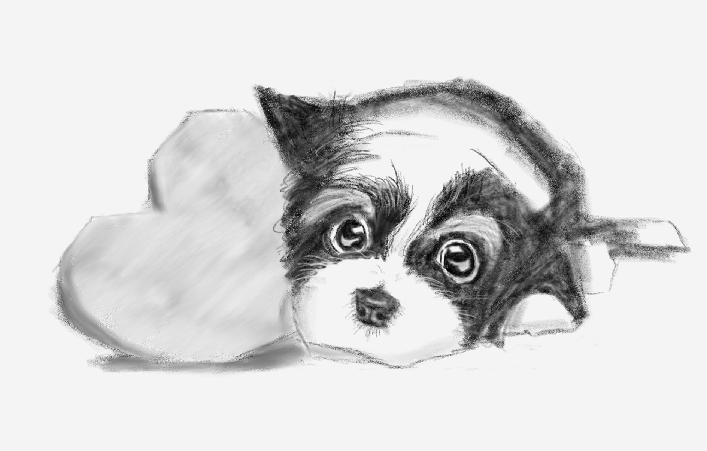
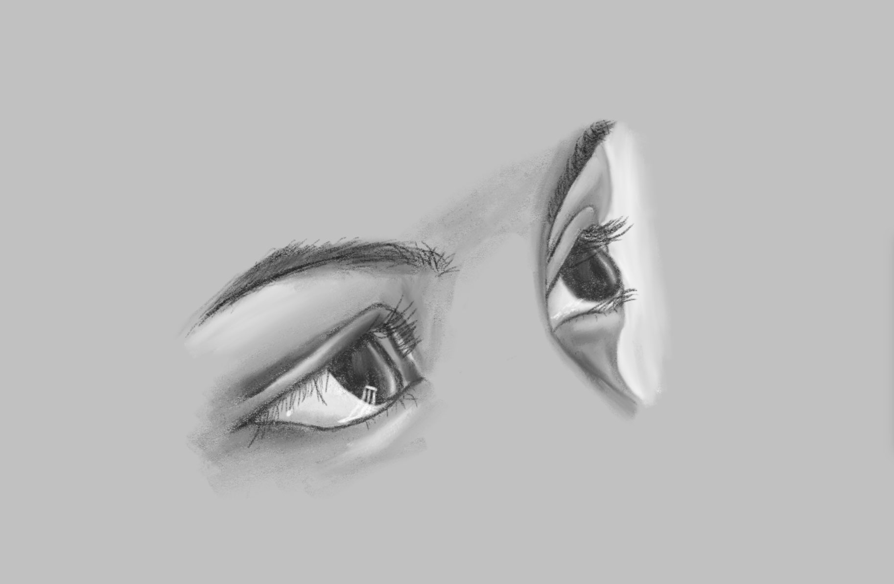
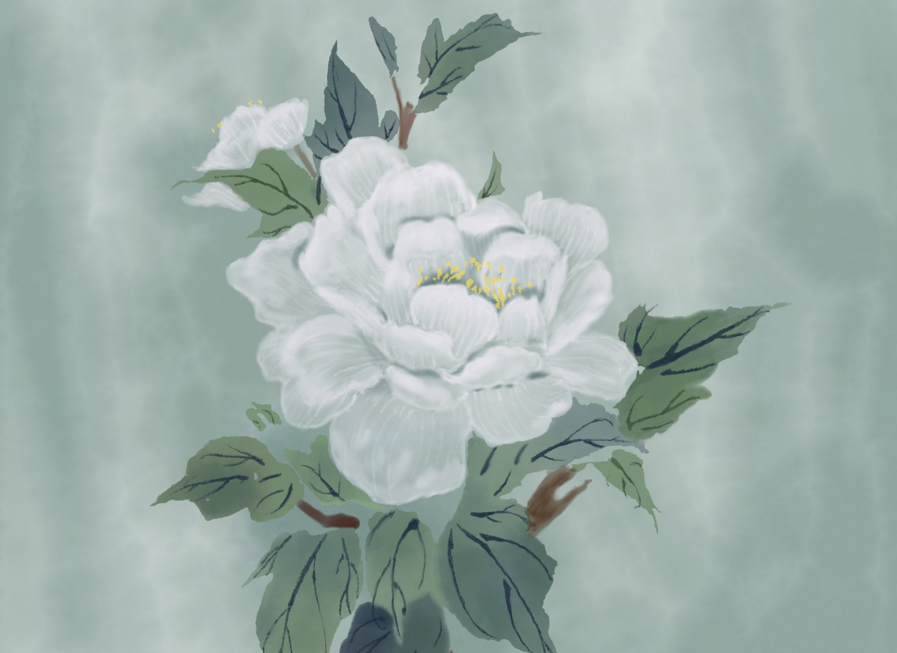
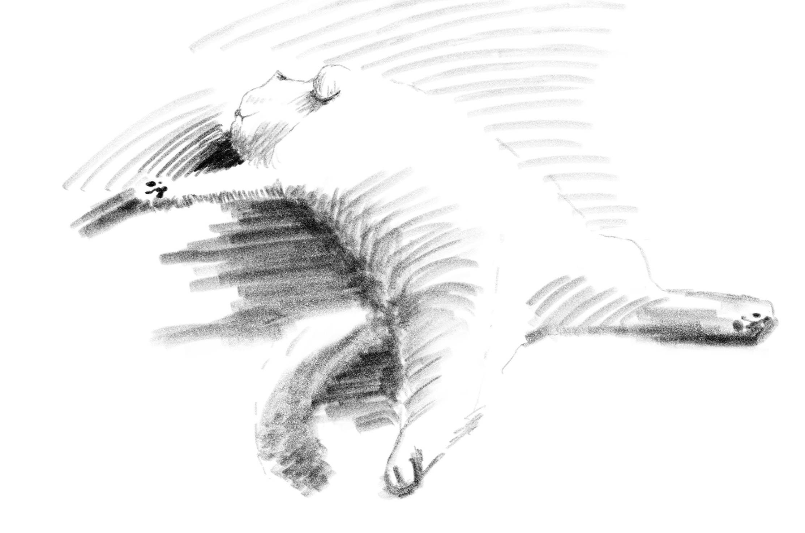

I'm Shinjer (rhymes with ginger)! I'm a second year medical student at Eastern Virginia Medical School (EVMS) with an interest in data science, imaging, and clinical informatics. I build tools that make evidence-based medicine more accessible at the point of care.
Extra practice for recognizing common gross pathology, radiological studies, histology, blood smears, and more.




SERMACS · Atlanta, GA
View presentation →ENC · Pacific Grove, CA
View presentation →SERMACS · Durham, NC
View presentation →